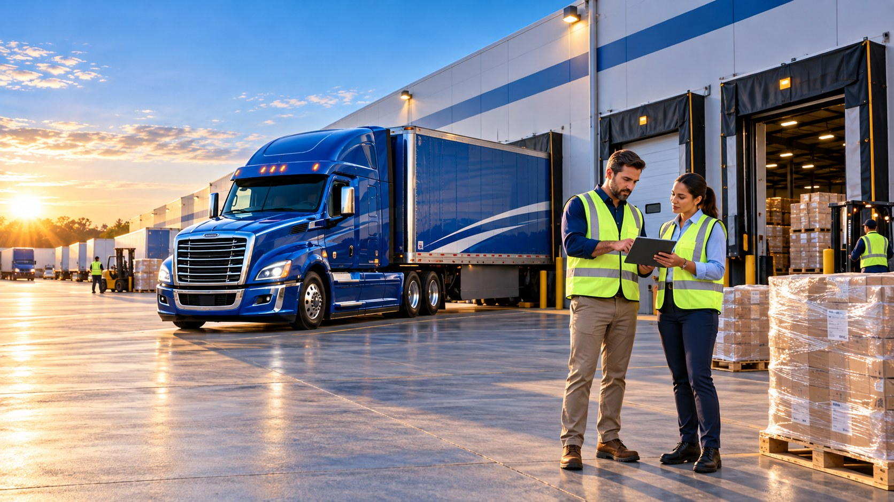

Freight moves better when options work together.
Direct trucking operations and freight brokerage services, built around what you need to ship, where it needs to go, and when it needs to arrive.

Company Trucking
Explore equipment, service areas, freight types and direct transportation capabilities.
See trucking services →02 / FREIGHT NETWORKFreight Brokerage
Coordinate freight across lanes, equipment requirements and available carrier capacity.
See brokerage solutions →Built for the freight you actually move.
From consistent truckload shipping to specialized equipment requests, start with the service that matches the shipment.

An easier way to start moving freight
Provide the lane, commodity, loading requirements and delivery window. Our team can evaluate a direct trucking or brokerage approach.
- A quote request designed around real shipment details
- Direct contact for transportation planning
- Equipment and routing considerations
Choose your relationship with ALSA.
Different partners need different information. Each path below takes you to a dedicated intake experience.
Open a shipping relationship
Tell us about your company and recurring freight needs.
Shipper onboarding →OWNER-OPERATORSBring your equipment
Share operating preferences, equipment and qualifications.
Owner-operator onboarding →DRIVERSDrive with ALSA
Introduce your CDL experience, qualifications and availability.
Driver application →What needs to move next?
Share the load details and start the transportation conversation.